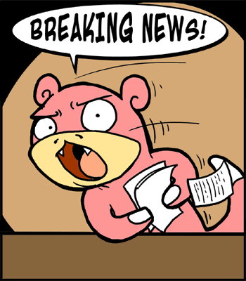

The voices clash and debate
So many wrongs to right
Their bleeding heats flow never-ending
(Like their appetites)
„Left“ on a front line they can‘t defend
(Why try to pretend?)Misery Index, „Partisans of Grief“
Liebe menschliche und nicht-menschliche Tiere, kritische und nicht-kritische Heten und Nicht-Heten! Lange hatten wir vor, uns zu neuesten Ereignissen in Würg zu äußern, schafften es aus vielen Gründen nicht. Nun, lassen wir, sozusagen, aus einer zeitlichen Distanz einige ekligen Dinge Revue passieren, denn erst so vielleicht etwas klarer wird und – und dies ist kein minderer Grund – auch wir schreiben gerne Nachbetrachtungen.

Wie gewohnt, gedachte Würg auch dieses Jahr am 16. März der Opfer der Bombardierung der Stadt 1945 durch die Alliierten. Das Programm wiederholt sich mit geringen Variationen jährlich: mensch kann wahlweise Kränze niederlegen oder mit Kerzen in der Hand in der Gegend herumstehen, bei Gedenk-Marathons mitlaufen oder das „Nagelkreuz von Covenntry“ durch die Stadt schleppen. Zur Sache tut das nichts: auf Kirchenkonzerten und bei offiziösen Reden feiert die gute Mitte der postnazistischen Gesellschaft ihre Rechtschaffenheit und betet das alljährliche „Nie wieder / arme Würzburger Bevölkerung / heldenhafte Trümerfrauen“ runter, um sich weiterhin fröhlich über das Weiterlaufen des Betriebs der bürgerlichen Gesellschaft zu kümmern, dessen angeblicher „Unfall“ der National-Sozialismus war. Weil der deutsche Vernichtungskrieg sich unglücklicherweise gegen die Deutschen wandte, scheint es jetzt allen guten Töchtern und Söhnen Würgs angebracht, in Stille sich darüber zu beklagen, der deutschen Opfer zu gedenken und sich zu versöhnen. (Kann sich noch jemand erinnern, wie die empörten Kinder bei ihrem „Bildungsprotest“ 2010 eben dieser Mitte, der sie entstammen, freiwillig und eifrig entsprachen – nämlich ihren Internet-Auftritt zum 16. März von „wuerzburg-brennt“ in „bildungsprotest-wuerzburg“ umbenannten?) Am längsten versöhnte sich bezeichnenderweise das Programmkino Central, das noch im Mai die Veranstaltungen zum 16. März 1945 durchführte, „wegen der großen Nachfrage“.
Es sind immer die Alliierten gewesen, die bei der militärisch „sinnlosen“ Zerbombung Würgs „übertrieben“ haben. Für die Angehörigen der Massakrierten in Italien, in Griechenland zahlt der deutsche Staat, wenn es nur möglich ist, keinen Cent Entschädigung, die Renten für die Zwangsarbeiter aus polnischen Ghettos sind – sagen wir mal so – unwahrscheinlich, aber die gute Mitte versöhnt sich. Versöhnt mit sich selbst vor allem, mensch ist längst wieder wer auf der Weltbühne und bekennt sich mehr oder weniger offen zu dieser zur Nation geronnenen Konterrevolution, zu den Resultaten der Vernichtung, aus der die bundesdeutsche Gesellschaft hervorgegangen ist. Dieses Bekenntnis ist das „Transzendentalsubjekt“ (1), das jeden Gedanken begleitet und jedes Gedenken an die Opfer des Nationalsozialismus unschädlich, unwirksam, folgenlos macht. Es lässt seine TrägerInnen wie Puppen schöne und wichtige Reden aufsagen und betroffen in die Kameras schauen, ohne dass sie begreifen können oder nur wollen, was sie da sagen. War das nicht etwa derselbe Georg Rosenthal (OB Würg, SPD), der letztes Jahr die Polizei und die städtische Bürokratie die protestierenden Iraner auf die übelste Weise schikanieren ließ? Hat nicht etwa die Stadtverwaltung unter dem Kommando dieses aufrechten Demokraten Anfang August 2012 die NPD in unmittelbarer Nähe vom Protestzelt ihre Propaganda-Veranstaltung durchführen lassen?
Um den NPD-Schönling Arne Schimmer aus dem sächsischen Landtag zu zitieren: „Geschisspolitische Themensetzungen“ sind halt so ’ne Sache, sie sind wichtige gemeinschaftsstiftende Rituale, in denen die Deutschen näher zusammen rücken. (Das sagt er im sehr sehenswerten „Come together“ . Da offenbaren sich außerdem so einige Abgründe des jährlichen Gedenkenspektakels in Dresden, sowohl von „demokratischer“ Seite, als auch vom etwas ehrlicheren und gleichsam durchgeknallterem Teil der guten Mitte: da verrät Schimmer nämlich auf was für interessante Gedanken mensch in der Würzburger Jugendherberge manchmal kommt).
Anders als in Dresden (auch eine absolut „sinnlos“ und böswillig zerbombte deutsche Stadt, übrigens) war das Gedenken in Würg lange Zeit nicht komplett: die verklärenden, hauptsächlich um die deutsche Opfer trauernden Demokraten, aber keine Nazis. Nicht nur mancheR BürgerIn vermisste deren ehrliche und direkte Botschaften, auch unsere kleinen Antifa-FreundInnen waren all die Jahre ohne den gewohnten Feind desorientiert und mussten Demo-Ausflüge in andere Städte machen. Und dann war es wieder so weit: mensch rief die Geister lange genug herbei und sie kamen.
Sie kündigten sich im März und April an und als sie sich in dieser Stadt von der Polizei und der Verwaltung toleriert fühlten, haben sie versucht, der SPD und dem DGB die anständigen deutschen ArbeiterInnen am 1. Mai abzuwerben. Und wären sie von der Polizei zum Marktplatz durchgelassen, wären sie womöglich damit erfolgreich geworden, wer weiß… Aber der Reihe nach. Im Vorfeld erklärte das Bündnis der guten Mitte gegen Rechts, es wolle „die Polizei nicht in die Lage bringen, Nazis vor der bunten Gesellschaft zu schützen“. Vermutlich, um das Bild vom Freund und Helfer nicht nachhaltig zu zerstören, zog am 1. Mai der Demo-Zug der guten Mitte zum Marktplatz, zur Bratwurst für Demokratie und Toleranz und Heimatliedern. Dieses Jahr scheinen die Organisatoren aus den Fehlern letztes Jahres gelernt zu haben: kein fürs Arbeitervolk unverständlicher Post-Rock diesmal, sondern folkloristisches Gedudel a la „auch unser nächstes Lied handelt von der Heimat“, das das Publikum sogar bei schlechtem Wetter am Platz hielt. Somit fühlen wir uns in unserem Urteil, was den Verrat am guten Geschmack angeht, bestätigt. Währenddessen besetzten Hunderte Menschen in gruseligen Astronauten-Outfits einen recht großen Teil der Stadt und ließen die Nazis vom FNS durch die leeren Straßen laufen. Armselige Blockadeversuche wurden brutal geräumt. Die groteske Show, die die Nazis sich einfallen ließen, hätte wahrscheinlich fast niemand bemerkt, hätten die Pressefotographen sie nicht fleißig abfotografiert. (Wir hoffen, wir müssten dieses Ekel nicht noch mal hier für euch veröffentlichen, es lässt sich auf den Seiten der MainPest und Würzburg-Erleben ansehen). Schließlich konnten diese FreundInnen des werktätigen Volks ungestört abreisen. 1:0 für die Polizei. Ewige Schande für alle Parteimenschen und GewerkschafterInnen, für die VertreterInnen der Stadt, die am Marktplatz gefeiert haben, die die halbe Stadt an die Nazis abgetreten und dazu noch die gute Miene gemacht haben, die statt dagegen einfach nur daneben waren. Es fragt sich lediglich nur, ob das Braune in Würg nun auch zum Bunten gehört oder ist das Bunte eh schon so bräunlich? (Eigentlich haben wir die Frage bereits beantwortet, die rhetorischen Fragen tun sich aber immer gut im Text).
Die kleinen Antifa-FreundInnen wollten sich den Tag von der bösen Polizei nicht endgültig vermiesen und versuchten sich in etwas, worin sie sehr gut sind – im Demonstrieren. War vielleicht unter gegebenen Umständen gar keine so schlechte Idee. Fragen wir diesmal nicht nach dem Sinn des Demonstrierens „gegen den Kapitalismus“, oder des Demonstrierens ausgerechnet am 1. Mai und nicht an jedem beliebigen Tag, wie es z.B. unsere anderen kleinen Freunde vom A-Netz Südwest gelegentlich tun. Gemeinschaftsstiftende Rituale und Events sind, bekanntlich, wichtig. Auffallend ist nur, dass die so auf die Straße getragene „fundiert radikale Kritik am kapitalistischen System“, diese Ansammlung von Plattitüden über Nationalismus und Arbeitsfetisch, dem Nazi-Spektakel nicht hätte standhalten können. Einen wichtigen Bestandteil der nazistischen Phantasiewelt bildet die paranoide Vorstellung von einer übermächtigen jüdischen Verschwörung, die die ganze Welt in Bewegung setzt, nur um arbeitsame friedfertige Völker der Germanen zu vernichten. Wer will, kann sich noch mal die Fotos vom FNS-Aufmarsch anschauen: neben der traurigen Merkel, neben dem Uncle Sam, der den muskulösen deutschen Arbeiter für einen offensichtlich bösen militärischen Zweck knechten wollte, läuft eine Gestalt mit Hut und Bart mit dem Koffer voller Geld. Wir wüssten nicht, dass solche Hütte und Bärte zum Erscheinungsbild eines modernen Top-Managers oder Bankiers gehörten. Dass die kleinen FreundInnen in ihrer „fundierten radikalen Kritik“ vom Arbeitsfetisch Nationalismus ableiten, aber eben nicht den Antisemitismus, lässt auf zweierlei schließen. Erstens, war das offensichtlich nicht gewollt: denn dann müsste mensch nicht nur sich selbst die Frage, wie mensch zum jüdischen Staate stehe, stellen, sondern auch den werten und geschätzten FreundInnen in der Erwachsenen-Politik. Und zu was für einem Unfug diese FreundInnen fähig sind, wissen wir noch. Wisst ihr denn noch, wie Juli 2010 die Mavi Marmara-Affäre in einem vor der „Linken“ organisierten Vortrag zum Ausdruck der proletarischen Solidarität erklärt wurde? Zweitens, ist es vermutlich ganz einfach nicht gekonnt. Es gehört freilich einiges an geistiger Anstrengung dazu, den Wahn, das Unpersönliche und Abstrakte im Kapitalverhältnis im Namen der „ehrlichen Arbeit“ personifizieren und ausrotten zu wollen, zu benennen. Die Montagsspaziergänge haben diesbezüglich noch niemandem gut getan – das nur am Rande angemerkt. Läge es allerdings nur daran, hätten wir gesagt: nu, das wird schon, mensch muss es nur wollen…
Lasst uns das alles hier so stehen, wie es ist. Keine Empfehlungen, keine Hinweise und „Verbesserungsvorschläge“, keine erbauenden „Und trotzdem…“ oder „Und dennoch…“. Es ist trostlos und das sollte man sich eingestehen. Alles in dieser Stadt passt zu einander auf eine unheimliche Weise, selbst die vermeintlich „radikale“ Linke.
Weitere „Nachbetrachtungen“ folgen, stay tuned. Liebesstrahlen in alle Richtungen.
Nicht.
1)Gerhardt Scheit: Gemeinschaftsneid des Einzeltäters, Bußfertigkeit im Kollektiv. Primäre und sekundäre Form des postnazistischen Bewusstsein, in: Stephan Grigat (Hg.): Postnazismus revisited. Das Nachleben des Nationalsozialismus im 21. Jahrhundert, ca ira, 2012

Meanwhile diskutiert man in der Facebookgruppe der MoSpasts folgendes:
„[…] Denn ich war zwar auch einmal so naiv, im Dritten Reich quasi das ultimative Böse sehen zu wollen – doch kann ich darauf heutzutage, mit erweitertem Wissen, wesentlich differenzierter zurückblicken. […] Man muss sich anversicht erst einmal ausführlich mit den Ursachen des 2. Weltkriegs, auch mit dem dem Judentum innewohnenden Zionismus beschäftigen. […] Meiner Ansicht nach, zeigt das Dritte Reich uns nur eine ‘Seite der Medallie’ auf. Es gibt prinzipiell immer Gewinner und Verlierer. Das Ying & das Yang. […]“
„[…] ändern würde sich nur etwas, wenn man mit den Rechten gegen Atomwaffen, Uranium-Munition & den Waffenhandel demonstriert. bzw. sich die Rechten mit den Organisatoren für/gegen dieselbe Sache einsetzen. […] das Volk ist nicht unser Feind. Wir brauchen keinen Klassenkampf respektive Bürgerkrieg. Wir sollten uns gegen Machtpolitik & den Geldadel erheben, nach oben treten – nicht nach unten. […] Gerade bei einem Ostermarsch sollte man noch am ehesten ein Signal zum Aufbruch – ein symbolische Handlung erwarten können, die über dämliche Aufmärsche hinaus gehen..
Ein Signal, dass man nicht länger blöd gegeneinander aufmarschieren gewillt ist – sondern von nun an die Politik in die Pflicht nimmt und von ihr erwartet die Zustände in Europa endlich zu verbessern und zu einer weiteren Deeskalation beizutragen.
(oder ansonsten den Reichstag gemeinsam in Brand steckt..)^_^“
Der Typ nimmt regelmäßig am Umzug der Mospas teil und betreibt auch noch einen lustigen Blog. Dort veröffentlicht er auch lustige Briefe an seine Profs.
http://stephanschwarz.wordpress.com/2011/05/11/zu-nationalsozialismus-ns-propaganda-schreiben-an-meine-profs/
den typen kennen wir noch als glühenden verteidiger des „fail-trades“ und überzeugten gesellianer. jede stadt braucht ihre clowns. aber tut mensch so was tatsächlich bei mospas diskutieren?!
und wenn es schon prinzipiell gewinner und verliere“ gibt, wer gewinnt dabei (außer ZOG)?